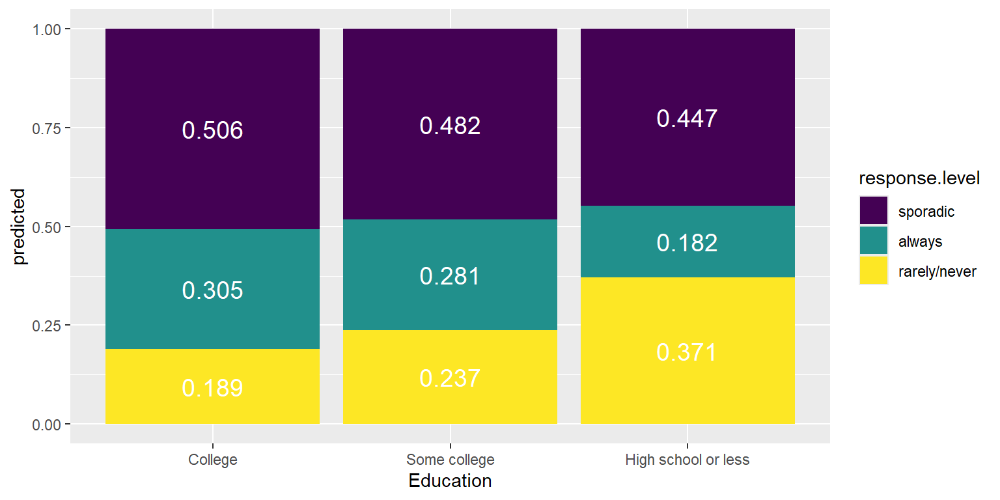

Code
library(nnet)
library(car)
library(tidyverse)
library(emmeans)
library(ggeffects)
library(knitr)
library(patchwork)
library(broom)
library(parameters)
library(easystats)Suyog Chandramouli
February 26, 2025
Lab Goal: Predict voting frequency using demographic variables Data source: FiveThirtyEight “Why Many Americans Don’t Vote” survey Method: Multinomial logistic regression
The data for this assignment comes from an online Ipsos survey that was conducted for the FiveThirtyEight article “Why Many Americans Don’t Vote”. You can read more about the survey design and respondents in the README of the GitHub repo for the data.
Respondents were asked a variety of questions about their political beliefs, thoughts on multiple issues, and voting behavior. We will focus on using the demographic variables and someone’s party identification to understand whether a person is a probable voter.
The variables we’ll focus on were (definitions from the codebook in data set GitHub repo):
ppage: Age of respondent
educ: Highest educational attainment category.
race: Race of respondent, census categories. Note: all categories except Hispanic were non-Hispanic.
gender: Gender of respondent
income_cat: Household income category of respondent
Q30: Response to the question “Generally speaking, do you think of yourself as a…”
voter_category: past voting behavior:
You can read in the data directly from the GitHub repo:
Q30 contains the respondent’s political party identification. Make a new variable that simplifies Q30 into four categories: “Democrat”, “Republican”, “Independent”, “Other” (“Other” also includes respondents who did not answer the question).voter_category identifies the respondent’s past voter behavior. Relevel the variable to make rarely/never the baseline level, followed by sporadic, then always[1] "always" "rarely/never" "sporadic" [1] "sporadic" "always" "rarely/never"The plots can be combined into a single plot using the patchwork package.
# weights: 36 (22 variable)
initial value 6411.501317
iter 10 value 5787.319553
iter 20 value 5710.106757
final value 5693.312867
convergedCall:
multinom(formula = voter_category ~ ppage_centered + race + gender +
income_cat + educ, data = voter_data)
Coefficients:
(Intercept) ppage_centered raceHispanic raceOther/Mixed raceWhite
always -0.2930636 0.01302944 -0.41064914 -0.3098896 0.1666330
rarely/never -1.5717468 -0.04756711 0.00653516 0.3728727 0.1274334
genderMale income_cat$40-75k income_cat$75-125k
always -0.11444321 0.06029828 0.1474791658
rarely/never 0.09612722 0.12720614 0.0008327606
income_catLess than $40k educHigh school or less educSome college
always -0.09375046 -0.4307847 -0.05493845
rarely/never 0.66256504 0.9221824 0.35703209
Std. Errors:
(Intercept) ppage_centered raceHispanic raceOther/Mixed raceWhite
always 0.1064595 0.001954865 0.1212049 0.1546103 0.08711378
rarely/never 0.1313277 0.002287714 0.1256846 0.1567324 0.10173736
genderMale income_cat$40-75k income_cat$75-125k
always 0.06270386 0.09207983 0.0842924
rarely/never 0.07068793 0.11021246 0.1059299
income_catLess than $40k educHigh school or less educSome college
always 0.1027393 0.08639085 0.07673907
rarely/never 0.1121243 0.09566403 0.09377194
Residual Deviance: 11386.63
AIC: 11430.63 # weights: 45 (28 variable)
initial value 6411.501317
iter 10 value 5712.138215
iter 20 value 5630.480535
iter 30 value 5617.781229
final value 5616.390878
convergedCall:
multinom(formula = voter_category ~ ppage_centered + race + gender +
income_cat + educ + pol_ident_new, data = voter_data)
Coefficients:
(Intercept) ppage_centered raceHispanic raceOther/Mixed raceWhite
always -0.2411758 0.01252151 -0.38124890 -0.2680365 0.20474650
rarely/never -1.7315773 -0.04568583 -0.04024104 0.3324263 0.07753584
genderMale income_cat$40-75k income_cat$75-125k
always -0.10212938 0.07337959 0.15268950
rarely/never 0.09005921 0.07376215 -0.01249317
income_catLess than $40k educHigh school or less educSome college
always -0.07629406 -0.4139089 -0.03742667
rarely/never 0.58781862 0.8532964 0.29289159
pol_ident_newIndep pol_ident_newOther pol_ident_newRep
always -0.1698740 -0.4605512 -0.07796573
rarely/never 0.3924389 0.9404568 0.08381229
Std. Errors:
(Intercept) ppage_centered raceHispanic raceOther/Mixed raceWhite
always 0.1078881 0.001964019 0.1222822 0.1560996 0.09266425
rarely/never 0.1360832 0.002324481 0.1280062 0.1590606 0.10784955
genderMale income_cat$40-75k income_cat$75-125k
always 0.06322716 0.09227759 0.08441574
rarely/never 0.07217159 0.11136556 0.10662568
income_catLess than $40k educHigh school or less educSome college
always 0.1030657 0.08698980 0.07734979
rarely/never 0.1137400 0.09739894 0.09520346
pol_ident_newIndep pol_ident_newOther pol_ident_newRep
always 0.08404605 0.1211546 0.08191505
rarely/never 0.09769631 0.1062289 0.10276761
Residual Deviance: 11232.78
AIC: 11288.78 Model Resid. df
1 ppage_centered + race + gender + income_cat + educ 11650
2 ppage_centered + race + gender + income_cat + educ + pol_ident_new 11644
Resid. Dev Test Df LR stat. Pr(Chi)
1 11386.63 NA NA NA
2 11232.78 1 vs 2 6 153.844 0> #Enter answer based on your code: Yes! There is significant gain in variance explainedUse the model you select for the remainder of the assignment.
Run the full model and report overall significance of each of the terms
Analysis of Deviance Table (Type II tests)
Response: voter_category
LR Chisq Df Pr(>Chisq)
ppage_centered 638.30 2 < 2.2e-16 ***
race 52.65 6 1.379e-09 ***
gender 6.03 2 0.0491 *
income_cat 67.72 6 1.198e-12 ***
educ 154.14 4 < 2.2e-16 ***
pol_ident_new 153.84 6 < 2.2e-16 ***
---
Signif. codes: 0 '***' 0.001 '**' 0.01 '*' 0.05 '.' 0.1 ' ' 1#Get estimated marginal means from the model
#using
multinomial_analysis_age <- emmeans(model2, ~ pol_ident_new|voter_category)
coefs = contrast(regrid(multinomial_analysis_age, "log"),"trt.vs.ctrl1", by="pol_ident_new")
# you can add a parameter to the above command, ref = newbaseline, if you want to change baseline
update(coefs, by = "contrast") %>%
kable(format = "markdown", digits = 3)| contrast | pol_ident_new | estimate | SE | df | t.ratio | p.value |
|---|---|---|---|---|---|---|
| always - sporadic | Dem | -0.482 | 0.057 | 28 | -8.478 | 0.000 |
| (rarely/never) - sporadic | Dem | -0.961 | 0.070 | 28 | -13.722 | 0.000 |
| always - sporadic | Indep | -0.640 | 0.072 | 28 | -8.954 | 0.000 |
| (rarely/never) - sporadic | Indep | -0.591 | 0.077 | 28 | -7.643 | 0.000 |
| always - sporadic | Other | -0.913 | 0.111 | 28 | -8.263 | 0.000 |
| (rarely/never) - sporadic | Other | -0.078 | 0.087 | 28 | -0.902 | 0.747 |
| always - sporadic | Rep | -0.556 | 0.071 | 28 | -7.885 | 0.000 |
| (rarely/never) - sporadic | Rep | -0.883 | 0.084 | 28 | -10.469 | 0.000 |
#Enter code
multinomial_analysis_educ <- emmeans(model2, ~ educ|voter_category)
coefs = contrast(regrid(multinomial_analysis_educ, "log"),"trt.vs.ctrl1", by="educ")
# you can add a parameter to the above command, ref = newbaseline, if you want to change baseline
update(coefs, by = "contrast") %>%
kable(format = "markdown", digits = 3)| contrast | educ | estimate | SE | df | t.ratio | p.value |
|---|---|---|---|---|---|---|
| always - sporadic | College | -0.509 | 0.060 | 28 | -8.497 | 0.000 |
| (rarely/never) - sporadic | College | -0.986 | 0.076 | 28 | -12.904 | 0.000 |
| always - sporadic | High school or less | -0.898 | 0.074 | 28 | -12.189 | 0.000 |
| (rarely/never) - sporadic | High school or less | -0.187 | 0.069 | 28 | -2.705 | 0.031 |
| always - sporadic | Some college | -0.540 | 0.065 | 28 | -8.357 | 0.000 |
| (rarely/never) - sporadic | Some college | -0.707 | 0.074 | 28 | -9.512 | 0.000 |
Next, plot the predicted probabilities of voter category as a function of Age and Party ID
ggemmeans(model2, terms = c("ppage_centered")) %>%
ggplot(., aes(x = x, y = predicted , fill = response.level)) +
geom_area() +
geom_rug(sides = "b", position = "jitter", alpha = .5) +
labs(x = "\nAge", y = "Predicted Probablity\n", title = "Predicted Probabilities of Voting Frequency by Age") +
scale_fill_manual(
name = NULL,
values = c("always" = "#F6B533", "sporadic" = "#D07EA2", "rarely/never" = "#9854F7"),
labels = c("RARELY OR NEVER VOTE ", "SOMETIMES VOTE ", "ALMOST ALWAYS VOTE "),
breaks = c("rarely/never", "sporadic", "always")
) +
theme_minimal()Plot predicted probabilities as a function of education and voting frequency.
ggemmeans(model2, terms=c("pol_ident_new")) %>%
ggplot(aes(x = x, y = predicted, fill = response.level))+
geom_bar(stat = "identity" ) +
geom_text(aes(label = round(predicted, 3)), color="white", position = position_fill(vjust = 0.5),size=5) +
labs(x="polID", "Predicted Probablity") +
scale_fill_viridis(discrete = TRUE)ggemmeans(model2, terms=c("educ")) %>%
ggplot(aes(x = x, y = predicted, fill = response.level))+
geom_bar(stat = "identity" ) +
geom_text(aes(label = round(predicted, 3)), color="white", position = position_fill(vjust = 0.5),size=5) +
labs(x="Education", "Predicted Probablity") +
scale_fill_viridis(discrete = TRUE)
| contrast | pol_ident_new | estimate | SE | df | t.ratio | p.value |
|---|---|---|---|---|---|---|
| always - sporadic | Dem | -0.482 | 0.057 | 28 | -8.478 | 0.000 |
| (rarely/never) - sporadic | Dem | -0.961 | 0.070 | 28 | -13.722 | 0.000 |
| always - sporadic | Indep | -0.640 | 0.072 | 28 | -8.954 | 0.000 |
| (rarely/never) - sporadic | Indep | -0.591 | 0.077 | 28 | -7.643 | 0.000 |
| always - sporadic | Other | -0.913 | 0.111 | 28 | -8.263 | 0.000 |
| (rarely/never) - sporadic | Other | -0.078 | 0.087 | 28 | -0.902 | 0.747 |
| always - sporadic | Rep | -0.556 | 0.071 | 28 | -7.885 | 0.000 |
| (rarely/never) - sporadic | Rep | -0.883 | 0.084 | 28 | -10.469 | 0.000 |
| contrast1 | contrast | estimate | SE | df | t.ratio | p.value |
|---|---|---|---|---|---|---|
| Indep - Dem | always - sporadic | -0.159 | 0.083 | 28 | -1.918 | 0.244 |
| Other - Dem | always - sporadic | -0.432 | 0.120 | 28 | -3.598 | 0.006 |
| Other - Indep | always - sporadic | -0.273 | 0.126 | 28 | -2.171 | 0.156 |
| Rep - Dem | always - sporadic | -0.075 | 0.081 | 28 | -0.927 | 0.791 |
| Rep - Indep | always - sporadic | 0.084 | 0.085 | 28 | 0.989 | 0.757 |
| Rep - Other | always - sporadic | 0.357 | 0.123 | 28 | 2.905 | 0.034 |
| Indep - Dem | (rarely/never) - sporadic | 0.370 | 0.094 | 28 | 3.933 | 0.003 |
| Other - Dem | (rarely/never) - sporadic | 0.883 | 0.103 | 28 | 8.578 | 0.000 |
| Other - Indep | (rarely/never) - sporadic | 0.513 | 0.107 | 28 | 4.807 | 0.000 |
| Rep - Dem | (rarely/never) - sporadic | 0.078 | 0.099 | 28 | 0.787 | 0.860 |
| Rep - Indep | (rarely/never) - sporadic | -0.292 | 0.099 | 28 | -2.965 | 0.029 |
| Rep - Other | (rarely/never) - sporadic | -0.805 | 0.109 | 28 | -7.404 | 0.000 |
Last part of the assignment: Interpret the results from running the following code for your model
| contrast | educ | estimate | SE | df | t.ratio | p.value |
|---|---|---|---|---|---|---|
| always - sporadic | College | -0.509 | 0.060 | 28 | -8.497 | 0.000 |
| (rarely/never) - sporadic | College | -0.986 | 0.076 | 28 | -12.904 | 0.000 |
| always - sporadic | High school or less | -0.898 | 0.074 | 28 | -12.189 | 0.000 |
| (rarely/never) - sporadic | High school or less | -0.187 | 0.069 | 28 | -2.705 | 0.031 |
| always - sporadic | Some college | -0.540 | 0.065 | 28 | -8.357 | 0.000 |
| (rarely/never) - sporadic | Some college | -0.707 | 0.074 | 28 | -9.512 | 0.000 |
| contrast1 | contrast | estimate | SE | df | t.ratio | p.value |
|---|---|---|---|---|---|---|
| High school or less - College | always - sporadic | -0.389 | 0.087 | 28 | -4.492 | 0.000 |
| Some college - College | always - sporadic | -0.031 | 0.076 | 28 | -0.412 | 0.911 |
| Some college - High school or less | always - sporadic | 0.358 | 0.085 | 28 | 4.220 | 0.001 |
| High school or less - College | (rarely/never) - sporadic | 0.799 | 0.095 | 28 | 8.416 | 0.000 |
| Some college - College | (rarely/never) - sporadic | 0.278 | 0.092 | 28 | 3.030 | 0.014 |
| Some college - High school or less | (rarely/never) - sporadic | -0.520 | 0.088 | 28 | -5.920 | 0.000 |
Enter your interpretation here: People with higher education show a stronger contrast between “sporadic voters” vs. “always” or “rarely/never” voters. As education level goes up, the more frequently people vote. However, people with college education are less likely to vote frequently, as compared to sporadically.
quartoblog quartoblog About /about.html https://github.com/ https://twitter.com
quartoblog - Lab 4 - Multinomial Regression - Questions quartoblog - Lab 4 - Multinomial Regression - Questions quartoblog - Lab 4 - Multinomial Regression - Questions quartoblog
---
title: "Lab 4 - Multinomial Regression - Questions"
image: bike.png
author:
- name: Suyog Chandramouli
date: last-modified
format:
html:
self-contained: true
anchor-sections: true
code-tools: true
code-fold: true
fig-width: 8
fig-height: 4
code-block-bg: "#f1f3f5"
code-block-border-left: "#31BAE9"
mainfont: Source Sans Pro
theme: journal
toc: true
toc-depth: 3
toc-location: left
captions: true
cap-location: margin
table-captions: true
tbl-cap-location: margin
reference-location: margin
pdf:
pdf-engine: lualatex
toc: false
number-sections: true
number-depth: 2
top-level-division: section
reference-location: document
listings: false
header-includes:
\usepackage{marginnote, here, relsize, needspace, setspace}
\def\it{\emph}
comments:
hypothesis: false
execute:
warning: false
message: false
---
Lab Goal: Predict voting frequency using demographic variables Data source: FiveThirtyEight "Why Many Americans Don't Vote" survey Method: Multinomial logistic regression
## Data
The data for this assignment comes from an online Ipsos survey that was conducted for the FiveThirtyEight article ["Why Many Americans Don't Vote"](https://projects.fivethirtyeight.com/non-voters-poll-2020-election/). You can read more about the survey design and respondents in the README of the [GitHub repo](https://github.com/fivethirtyeight/data/tree/master/non-voters) for the data.
Respondents were asked a variety of questions about their political beliefs, thoughts on multiple issues, and voting behavior. We will focus on using the demographic variables and someone's party identification to understand whether a person is a probable voter.
The variables we'll focus on were (definitions from the codebook in data set GitHub repo):
- `ppage`: Age of respondent
- `educ`: Highest educational attainment category.\
- `race`: Race of respondent, census categories. Note: all categories except Hispanic were non-Hispanic.
- `gender`: Gender of respondent
- `income_cat`: Household income category of respondent
- `Q30`: Response to the question "Generally speaking, do you think of yourself as a..."
- 1: Republican
- 2: Democrat
- 3: Independent
- 4: Another party, please specify
- 5: No preference
- -1: No response
- `voter_category`: past voting behavior:
- **always**: respondent voted in all or all-but-one of the elections they were eligible in
- **sporadic**: respondent voted in at least two, but fewer than all-but-one of the elections they were eligible in
- **rarely/never**: respondent voted in 0 or 1 of the elections they were eligible in
You can read in the data directly from the GitHub repo:
quarto-executable-code-5450563D
```r
library(nnet)
library(car)
library(tidyverse)
library(emmeans)
library(ggeffects)
library(knitr)
library(patchwork)
library(broom)
library(parameters)
library(easystats)
```
quarto-executable-code-5450563D
```r
voter_data <- read_csv("https://raw.githubusercontent.com/fivethirtyeight/data/master/non-voters/nonvoters_data.csv")
```
# Lab
- The variable `Q30` contains the respondent's political party identification. Make a new variable that simplifies `Q30` into four categories: "Democrat", "Republican", "Independent", "Other" ("Other" also includes respondents who did not answer the question).
quarto-executable-code-5450563D
```r
voter_data <- voter_data %>%
mutate(pol_ident_new = case_when(
Q30==1 ~ "Rep",
Q30==2 ~ "Dem",
Q30==3 ~ "Indep",
TRUE ~ "Other"
))
```
- The variable `voter_category` identifies the respondent's past voter behavior. Relevel the variable to make rarely/never the baseline level, followed by sporadic, then always
quarto-executable-code-5450563D
```r
#Enter your code
# Figuring out what unique variables are available
levels(as.factor(voter_data$voter_category))
# Reordering
voter_data$voter_category = relevel(as.factor(voter_data$voter_category), ref = "sporadic")
# Recheck level order
levels(as.factor(voter_data$voter_category))
```
- Center the age variable to make the intercept more interepretable. That is, so that it reflects the log-odds for an average-aged person rather than a 0-year old person
quarto-executable-code-5450563D
```r
# enter code
voter_data=voter_data %>%
mutate(ppage_centered = ppage - mean(ppage))
```
- In the [FiveThirtyEight article](https://projects.fivethirtyeight.com/non-voters-poll-2020-election/), the authors include visualizations of the relationship between the voter category and demographic variables such as race, age, education, etc. Select two demographic variables. For each variable, try to replicate the visualizations and interpret the plot to describe its relationship with voter category. Have fun with it: https://www.mikelee.co/posts/2020-02-08-recreate-fivethirtyeight-chicklet-stacked-bar-chart-in-ggplot2.
quarto-executable-code-5450563D
```r
# library
library(ggplot2)
library(viridis)
library(cowplot)
# Enter code
plot1=ggplot(voter_data, aes(x = voter_category, y = ppage)) +
geom_col(fill = "Blue")+
labs(title = " Voter Category vs. PPage",
x = "Voter Category",
y = "Age")
```
quarto-executable-code-5450563D
```r
# Enter code
plot2=ggplot(voter_data, aes(x = voter_category, fill = income_cat)) +
geom_bar() +
labs(title = "Voter Category vs. Income Category Counts",
x = "Voter Category",
y = "Count")
```
The plots can be combined into a single plot using the patchwork package.
quarto-executable-code-5450563D
```r
library(patchwork)
# Enter code
plot1 + plot2
```
- Fit a model using mean-centered age, race, gender, income, and education to predict voter category. Show the code used to fit the model, but do **not** display the model output.
quarto-executable-code-5450563D
```r
library(nnet)
#Enter code
model <- multinom(voter_category ~ ppage_centered+race+gender+income_cat+educ , data = voter_data)
summary(model)
```
- *Should party identification be added to the model?*
- #Hint: Use an anova test to make the determination
quarto-executable-code-5450563D
```r
#Enter code
model2 <- multinom(voter_category ~ ppage_centered+race+gender+income_cat+educ+pol_ident_new , data = voter_data)
summary(model2)
anova(model,model2)
```
```
> #Enter answer based on your code: Yes! There is significant gain in variance explained
```
**Use the model you select for the remainder of the assignment**.
## LRT
- Run the full model and report overall significance of each of the terms
```{r}
Anova(model2)
```
## Marginal Effects Political Group - Emmeans
quarto-executable-code-5450563D
```r
#Get estimated marginal means from the model
#using
multinomial_analysis_age <- emmeans(model2, ~ pol_ident_new|voter_category)
coefs = contrast(regrid(multinomial_analysis_age, "log"),"trt.vs.ctrl1", by="pol_ident_new")
# you can add a parameter to the above command, ref = newbaseline, if you want to change baseline
update(coefs, by = "contrast") %>%
kable(format = "markdown", digits = 3)
```
## Marginal Effects of Education - Emmeans
quarto-executable-code-5450563D
```r
#Enter code
multinomial_analysis_educ <- emmeans(model2, ~ educ|voter_category)
coefs = contrast(regrid(multinomial_analysis_educ, "log"),"trt.vs.ctrl1", by="educ")
# you can add a parameter to the above command, ref = newbaseline, if you want to change baseline
update(coefs, by = "contrast") %>%
kable(format = "markdown", digits = 3)
```
- Next, plot the predicted probabilities of voter category as a function of Age and Party ID
```{r}
ggemmeans(model2, terms = c("ppage_centered")) %>%
ggplot(., aes(x = x, y = predicted , fill = response.level)) +
geom_area() +
geom_rug(sides = "b", position = "jitter", alpha = .5) +
labs(x = "\nAge", y = "Predicted Probablity\n", title = "Predicted Probabilities of Voting Frequency by Age") +
scale_fill_manual(
name = NULL,
values = c("always" = "#F6B533", "sporadic" = "#D07EA2", "rarely/never" = "#9854F7"),
labels = c("RARELY OR NEVER VOTE ", "SOMETIMES VOTE ", "ALMOST ALWAYS VOTE "),
breaks = c("rarely/never", "sporadic", "always")
) +
theme_minimal()
```
Plot predicted probabilities as a function of education and voting frequency.
quarto-executable-code-5450563D
```r
ggemmeans(model2, terms=c("pol_ident_new")) %>%
ggplot(aes(x = x, y = predicted, fill = response.level))+
geom_bar(stat = "identity" ) +
geom_text(aes(label = round(predicted, 3)), color="white", position = position_fill(vjust = 0.5),size=5) +
labs(x="polID", "Predicted Probablity") +
scale_fill_viridis(discrete = TRUE)
```
quarto-executable-code-5450563D
```r
ggemmeans(model2, terms=c("educ")) %>%
ggplot(aes(x = x, y = predicted, fill = response.level))+
geom_bar(stat = "identity" ) +
geom_text(aes(label = round(predicted, 3)), color="white", position = position_fill(vjust = 0.5),size=5) +
labs(x="Education", "Predicted Probablity") +
scale_fill_viridis(discrete = TRUE)
```
## Write-up
### Differences between political groups and voting behavior - Emmeans
quarto-executable-code-5450563D
```r
multi_an <- emmeans(model2, ~ pol_ident_new|voter_category)
coefs = contrast(regrid(multi_an, "log"),"trt.vs.ctrl1", by="pol_ident_new")
update(coefs, by = "contrast") %>%
kable(format = "markdown", digits = 3)
# get difference between yes-no and fair-excellent
contrast(coefs, "revpairwise", by = "contrast") %>%
kable(format = "markdown", digits = 3)
```
### Differences between education level and voting behavior - Emmeans
Last part of the assignment: Interpret the results from running the following code for your model
quarto-executable-code-5450563D
```r
multi_an <- emmeans(model2, ~ educ|voter_category)
coefs = contrast(regrid(multi_an, "log"),"trt.vs.ctrl1", by="educ")
update(coefs, by = "contrast") %>%
kable(format = "markdown", digits = 3)
# get difference between yes-no and fair-excellent
contrast(coefs, "revpairwise", by = "contrast") %>%
kable(format = "markdown", digits = 3)
```
Enter your interpretation here: People with higher education show a stronger contrast between "sporadic voters" vs. "always" or "rarely/never" voters. As education level goes up, the more frequently people vote. However, people with college education are less likely to vote frequently, as compared to sporadically.